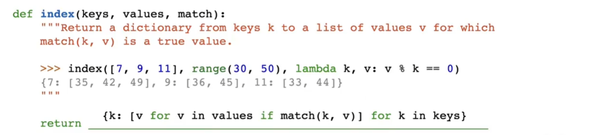

CS61A
Python
Tree class
作为Tree的类,有两个属性,label和branches,分别表示节点的值和子节点.
label是一个值,表示节点的值,存储在树根branches是一个列表,列表内都是Tree种类的变量,表示子节点
此处给出省略了__repr__和__str__的Tree类的定义:
Python class Tree :
def __init__ ( self , label , branches = []):
self . label = label
for branch in branches :
assert isinstance ( branch , Tree )
self . branches = list ( branches )
def is_leaf ( self ):
return not self . branches
#如果是叶子节点,self.branches为`[]`,所以返回not False,即True
要从标签x(任意值)和分支列表 bs (Tree 实例列表)构造 Tree 实例并为其指定名称t需要这样写:t = Tree(x, bs)
对于树 t：
t.label 是根节点的值t.branches 是一个列表,且始终是一个Tree类型的实例,表示子节点如果t.is_leaf()为True时,t_branches为空列表
要构建带有标签x的叶子,可以使用t = Tree(x)
要构建一个没有子节点的树,可以使用t = Tree(x, [])
打印树
repr(t) 返回计算结果为等效树的 Python 表达式str(t) 为每个标签返回一行，该标签的缩进次数比其父级多一次，且子级位于其父级之下
Python >>> t = Tree ( 3 , [ Tree ( 1 , [ Tree ( 4 ), Tree ( 1 )]), Tree ( 5 , [ Tree ( 9 )])])
>>> t # displays the contents of repr(t)
Tree ( 3 , [ Tree ( 1 , [ Tree ( 4 ), Tree ( 1 )]), Tree ( 5 , [ Tree ( 9 )])])
>>> print ( t ) # displays the contents of str(t)
3
1
4
1
5
9
更改树
t.label = y 将 t 的根标签更改为 y（任何值）
t.branches = ns 将 t 的分支更改为 ns（Tree 实例的列表）
t.branches.append(b) 将树 b 添加到 t 的分支列表中
t.branches.pop(i) 从 t 的分支列表中删除索引为 i 的树
t.branches[i] 返回 t 的第 i 个分支
t.branches[i] = b 将 t 的第 i 个分支更改为树 b
t.branches[0].label = y 会将最左侧分支的根标签更改为 y。
函数抽象实现的树vs类实现的树
函数抽象实现的树是一个列表,列表的第一个元素是根节点的值,第二个元素是子节点的列表
类实现的树是一个类,类的属性有label和branches,分别表示节点的值和子节点

注意点
Python >>> t = Tree ( 3 , [ Tree ( 2 , [ Tree ( 5 )]), Tree ( 4 )])
# 正确
< div markdown = "1" style = "margin-top: -30px; font-size: 0.75em; opacity: 0.7;" >
: material - circle - edit - outline : 约 875 个字 : fontawesome - solid - code : 84 行代码 : material - image - multiple - outline : 1 张图片 : material - clock - time - two - outline : 预计阅读时间 4 分钟
</ div >
>>> t = t = Tree ( 1 , Tree ( 2 ))
#错误,因为Tree(2)不是一个列表
Tree.branches[i]直接返回Tree实例,也就是显示的Tree实例的__repr__的返回值,注意这里的Tree实例是类的实例,不是函数抽象的实例,类的实例在__repr__中返回的是Tree(label, branches)的形式,而函数抽象的实例返回的是[label, branches]的形式
Python >>> t = Tree ( 1 , [ Tree ( 2 )])
>>> t . label
? 1
-- OK ! --
>>> t . branches [ 0 ]
? Tree ( 2 )
-- OK ! --
不用return传递值 :
Python def cumulative_mul ( t ):
"""Mutates t so that each node's label becomes the product of its own
label and all labels in the corresponding subtree rooted at t.
>>> t = Tree(1, [Tree(3, [Tree(5)]), Tree(7)])
>>> cumulative_mul(t)
>>> t
Tree(105, [Tree(15, [Tree(5)]), Tree(7)])
>>> otherTree = Tree(2, [Tree(1, [Tree(3), Tree(4), Tree(5)]), Tree(6, [Tree(7)])])
>>> cumulative_mul(otherTree)
>>> otherTree
Tree(5040, [Tree(60, [Tree(3), Tree(4), Tree(5)]), Tree(42, [Tree(7)])])
"""
"*** YOUR CODE HERE ***"
# Base case: if the tree is empty, return
for b in t . branches :
cumulative_mul ( b )
total = t . label
for b in t . branches :
total *= b . label
t . label = total
用return的版本
Python def cumulative_mul ( t ):
if t . is_leaf ():
return t . label
else :
for b in t . branches :
t . label *= cumulative_mul ( b )
return t . label
解析return的版本:
如果t是叶子节点,返回t.label,此时cumulative_mul(b)返回的是叶子节点的值.这是递归的base case
如果t不是叶子节点,也就是t是树,那么遍历每一个branches,把每一个branches的值都乘到t.label上,然后返回t.label
cumulatve_mul(b)返回的是叶子节点的值,base case返回的是叶子节点的值,然后返回的是label*(is_leaf)的label值,然后是不断的递归,直到遍历完所有的branches
解析不用return的版本:
遍历每一个branches,不断调用cumulative_mul(b),直到遍历完所有的branches
经过for循环之后我们首先到达的是base case
base case没有t.branches.所以不会进入for循环,t.label 不变
然后我们回到上一层,此时b.label已经是叶子节点的值,所以我们可以计算出t.label是所有b.label的乘积再乘上t.label
不断返回递归,直到遍历完所有的branches
lambda函数使用 :
Python def prune_small ( t , n ):
"""Prune the tree mutatively, keeping only the n branches
of each node with the smallest labels.
>>> t1 = Tree(6)
>>> prune_small(t1, 2)
>>> t1
Tree(6)
>>> t2 = Tree(6, [Tree(3), Tree(4)])
>>> prune_small(t2, 1)
>>> t2
Tree(6, [Tree(3)])
>>> t3 = Tree(6, [Tree(1), Tree(3, [Tree(1), Tree(2), Tree(3)]), Tree(5, [Tree(3), Tree(4)])])
>>> prune_small(t3, 2)
>>> t3
Tree(6, [Tree(1), Tree(3, [Tree(1), Tree(2)])])
"""
while len ( t . branches ) > n :
largest = max ( t . branches , key = lambda x : x . label )
t . branches . remove ( largest )
for i in t . branches :
prune_small ( i , n )
这里的max(t.branches, key=lambda x:x.label)是找到branches中label最大的那个branches,然后删除掉
lambda x:x.label是一个匿名函数,表示输入x,返回x.label,t.branches中的每一个元素都是Tree实例,所以x.label就是for i in branches的i.label
lambda